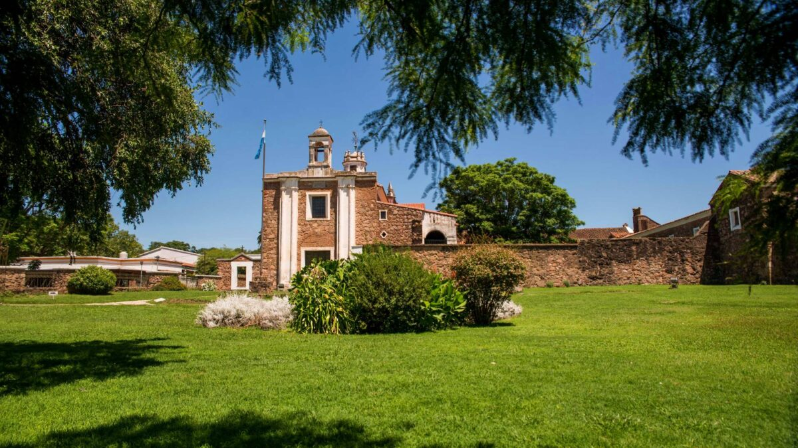
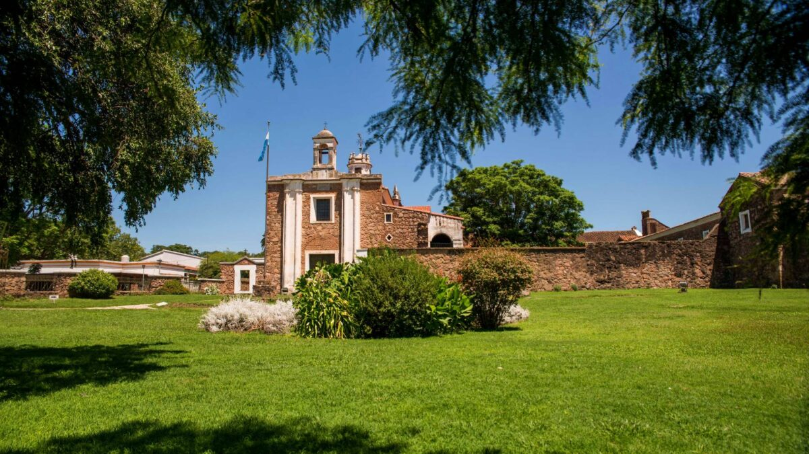

Córdoba, Argentina

Una ciudad llena de historia, cultura y belleza natural.
Una ciudad llena de historia, cultura y belleza natural.
Conoce todo sobre Córdoba, Argentina: su historia, cultura, turismo y más. Esta página está dedicada a ofrecerte una visión completa de esta maravillosa ciudad.

Córdoba es una de las ciudades más antiguas de Argentina, fundada en 1573 por Jerónimo Luis de Cabrera. A lo largo de los siglos, Córdoba ha sido un importante centro religioso, educativo y cultural. Su rica historia se refleja en sus iglesias coloniales, calles empedradas y su importancia como cuna de grandes personalidades.
Córdoba ofrece una gran variedad de atracciones turísticas. Desde su casco histórico, donde destacan la Catedral de Córdoba y el Cabildo Histórico, hasta sus hermosos paisajes naturales como las Sierra de los Comechingones y el Lago Los Molinos. También es conocida por sus estancias jesuíticas, como la Estancia de Alta Gracia y la Estancia Jesús María, declaradas Patrimonio de la Humanidad por la UNESCO. Tampoco se quedan atras sus hermosos y conocidos Rios. A continuación les dejamos algunas imagenes:

 

La cultura de Córdoba es una mezcla de tradición y modernidad. La ciudad es conocida por su vibrante vida estudiantil, debido a la presencia de la Universidad Nacional de Córdoba, la más antigua de América Latina. Además, en Córdoba se celebran festivales de música, arte y teatro, siendo el Festival de Cosquín uno de los más importantes para la música folclórica argentina. La gastronomía de Córdoba también es destacada, con platos típicos como el locro y la empanada cordobesa. Por ultimo pero no menos importante esta la cultura del Cuarteto Cordobes y tambien sus artistas actuales. A continuación le dejamos 2 canciones populares de Córdoba:
Se encuentra en la región central de Argentina, entre las llanuras pampeanas y el Gran Chaco al este, y las sierras de Córdoba al oeste. Limita con las provincias de: Catamarca y Santiago del Estero al norte, Santa Fe al este, Buenos Aires al sureste, La Pampa al sur, San Luis y La Rioja al oeste. Córdoba es la segunda provincia más poblada de Argentina, con 3 840 905 habitantes en 2022. Su capital, también llamada Córdoba, es la segunda ciudad más grande del país, con aproximadamente 1,4 millones de habitantes